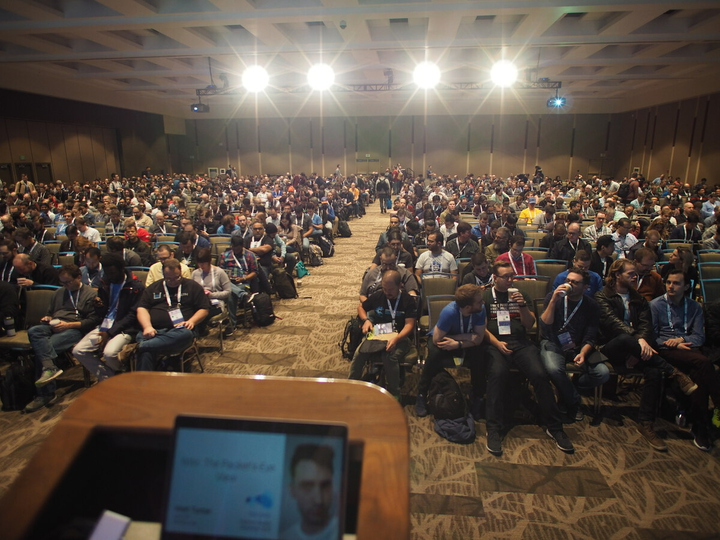

Istio - The Packet's-Eye View
13 December 2018 | Kubecon, Seattle Washington
Recording
Session Information
üéâ congrats to all who had their #kubecon #cloudnativecon talks accepted and thank you to everyone who submitted a talk... ~13% acceptance rate!
— Chris Aniszczyk (@cra) September 24, 2018
Abstract
The Istio project reached 1.0 this summer, and is mature enough to have LTS releases. It’s getting a lot of attention, but in a lot of ways it’s still a mystery. You’ve probably read about it, you might have tried it, but do you really understand it? It promises advances routing, security, and resiliency, all for free! In this session I’ll present a practical introduction to the operation of Istio - what features it can bring to your environment.
What’s unique about this talk is that we’ll be exploring the different parts of Istio by following one plucky little packet into the mesh, through it, and out again. As we meet each component we’ll learn why it’s there, what it does, and see a demo of how to configure it for common tasks. This will leave you not only with slides showing example configs, but a valuable mental model and a unique insight into the service mesh’s operation.
Slides
Pictures

Reviews
What do you get when you start with a microservice, then add libraries for #ServiceMesh functionality like security, observability, and reliability?
— Cooper Marcus (@coopermarcus) December 13, 2018
A "mini-lith"!
Nicely coined by @mt165 of @tetrateio in his outstanding preso at @KubeCon_ https://t.co/QXHewSDR25
I had actually submitted a Kubecon proposal for a very similar talk ... didn‚Äôt make it through ... but I‚Äôd probably not have done as brilliant a job as @mt165 did üòÉ
— Sanjeev Rampal (@sr2357) December 13, 2018
Fantastic talk by @mt165 of @tetrateio going step by step through the process of routing and policy decisions as a packet traverses an @IstioMesh service mesh. Slides at https://t.co/hktYF72QTT
— Joe Thompson (@caffeinepresent) December 13, 2018
Hey @mt165 thanks for your @KubeCon_ talk explaining a lot of complex stuff (@istiomesh) in a really simple way! #kubecon pic.twitter.com/Jh2AgbCHNf
— Chris Castle ‚ùÑÔ∏è (@crc) December 13, 2018
Agreed, awesome talk!
— Jon Moter (@jonmoter) December 13, 2018
This was an excellent walk-through / overview of istio. Here's the 2.5 hour version of the talk that Matt mentioned. @mt165 #KubeConhttps://t.co/ymP1JCpAMk
— miles üßô‚Äç‚ôÇÔ∏è (@miles_) December 13, 2018
Engineers want to understand how something works, not a high level overview of what it can do. That’s why @mt165’s talk was so well received.
— Mike Seminaro (@mseminaro) December 13, 2018
Thanks for the awesome talk. It's explained in a really good manner how everything works in istio and also why the components needed at a certain point in a very clear understandable way.
— Niclas Mietz (@solidnerd) December 17, 2018